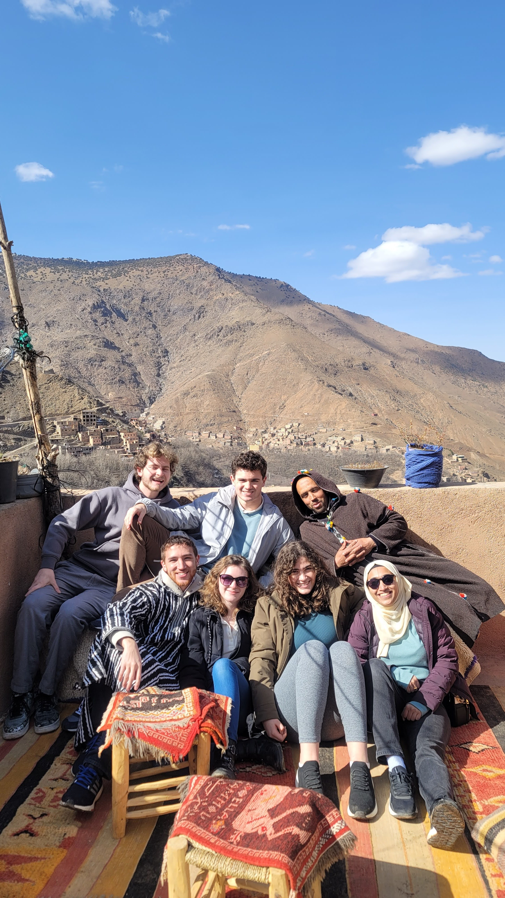
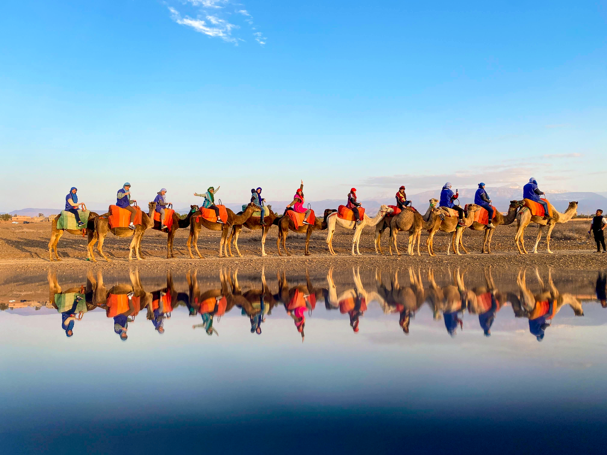
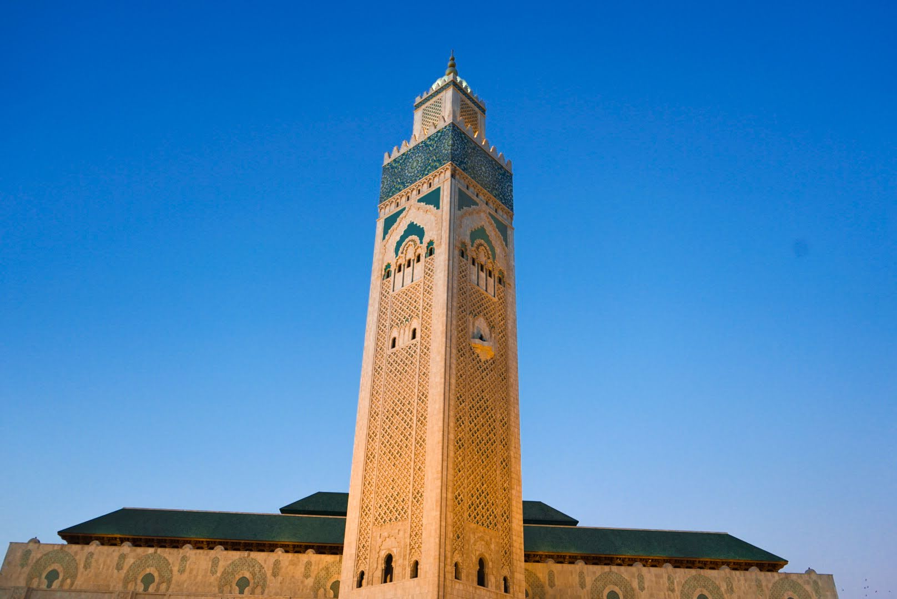
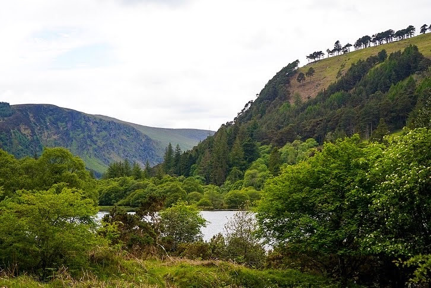
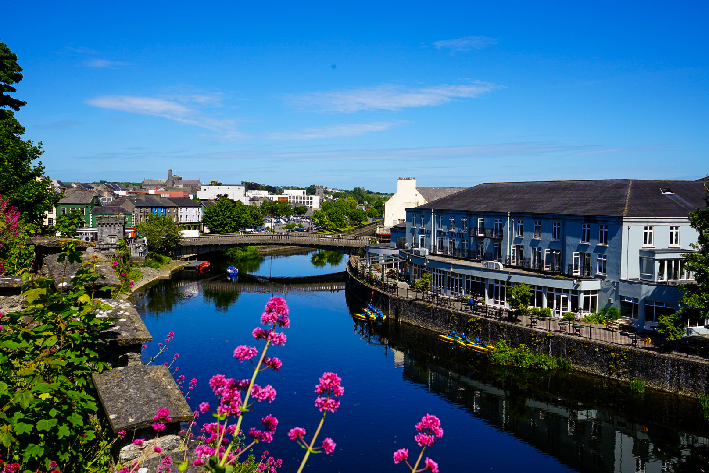

Here are some photos from my most memorable travels. Most of these photos were taken on my Sony A7II as one of
my side hobbies is practicing photography!
Portugal
Taken between an alleyway near the town center.
This was one of the prettiest views i've ever seen. This was taken at Miradouro de Santa Luzia.
The beautiful Arco da Rua Augusta.
Morocco

Up on the Atlas mountain with some of my friends.

My friends and I in the desert riding camels (I'm the girl in pink in the middle)!

This was outside the Hassan II Mosque during their night service.
Switzerland
On the way up a funicular, I had a great view of the Alps.I took this on my trail trek since I didnt bring the right gear for hiking.This was on my way up the Stoosbahnen funicular.
Ireland

This was in Wicklow in Glendalough. It felt absolutely magical being here.

This was taken from the Kilkenny castle grounds showing a view of the city center.